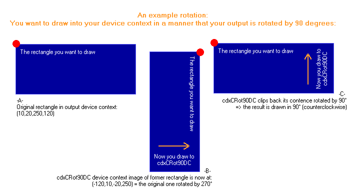

This article was contributed by Hans Bühler.
[ Illustration | Examples | Function reference | Tips & tricks | To do | Download ]
I recently downloaded the CMemDC class published by Keith Rule (see his article here at
codeguru's).
It faces the following problem: If you perform rather huge operations on a device context
(in an OnPaint(), for example), your display sometimes flickers around rather badly.
To circumvent this problem, Keith has designed CMemDC which creates a compatible
"memory" device context in which you draw alternatively.
After you finished drawing to this device context (in memory) you clip it to the original
one - only one blit takes places in the visible context. Therefore the output
doesn't flicker anymore (nearly, at least).
However, his implementation assumes that you always want to draw the entire clipping area
- even if it has already been filled up by WM_ERASEBKGND or sutff.
Moreover, I recently designed a new button that displays it text rotated.
Now, you can create a CFont that outputs text rotated (use a LOGFONT and set
lfOrientation and lfEscapement) but this works AFAIK for TrueType fonts only - it doesn't
work for MS Sans Serif at last.
At least, a CDC's text functions seem to get up confused if you set up such a font - the
produce "random" results ... try it if you don't believe me :O
Therefore I had a look at Keith' CMemDC and then at the CDC::PlgBlt() function. And I decided to extent the CMemDC to a "rotatable" memory context, i.e. a memory context that does not only clip one memory bitmap to an output device context only but one that even rotates it if you like it to.
Well, cdxCRot90DC takes place to solve these problems. Next to specifing a
"destination" device context (your output device, normally), it allows you to
even provide a rectangle out of it (CMemDC always used the current output context's clip
box) and an "even angle" of 0°, 90°, 180°, 270°, ... (that's why it's called
cdxCRot90DC and not cdxCRotDC :).
Note: I use the term "even angle" when I mean an angle dividable by 90 without
any rest.
Moreover, note that if I talk about an angle x the same applies to x+n*360 and x-n*360, n
out of N.
An example may illustrate what the device context does (using cdxCRot90DC with an angle of 90°):

You may acknowledge that the rotation is not limited to text - you can
freely draw into the memory device context as you like and the result will be put into
your original one as having been drawn rotated - unfortunately, you cannot draw into the
cdxCRot90DC using your original rectangle - you need to use the one transformed
automatically for you (get it using GetRotRect()).
If you choose an "even angle" of 0° the cdxCRot90DC class basically acts like
CMemDC with some advantages:
- You can freely define the rectangle of your destination DC you want to work with [see constructor/Create()]
- You can initially copy the previous device context's contence into your memory bitmap (that preserverves any work done by WM_ERASEBKGND or stuff that is been drawn by an ownerdrawn control if you use its DrawItem() function) [see constructor/Create()]
- You can discard your changes.
CMemDC always copies back its bitmap to your original device context - that may not be suitable (you found out a text is empty and nothing is in the bitmap, for example) [function Invalidate()]
Other features for rotated output:
- Transparent use of the angle.
You code doesn't need to be changed for different angles (if you use GetRotRect()).- Automatically clones the original DC's font, background color, text mode and text color (and restores them after use).
- An object can be reused with another destination context rectangle (no new DC is created and the old bitmap will be reused if possible).
[see Create()]
Please note:
- This device context doesn't support printing (in contrast to CMemDC).
If anybody could help me implementing it, I'd be very happy.
I for myself doesn't have a printer that seems to support rotated output ...
A simple OnPaint(), that draws a rotated text to its device
context:
[this example makes use of the constructor, GetRotRect(), IsCreated() and the destructor that calls Finish()]
void MyWnd::OnPaint()
{
// create "destDC"
CPaintDC destDC(this);
// get client rect
CRect rectClient;
GetClientRect(rectClient);
{
cdxCRot90DC rotDC(destDC,rectClient,90 /*90 degress*/ );
if(!rotDC.IsCreated())
return;
// get client
rect in rotated coordinates
CRect rectRot = dc.GetRotRect();
// example:
print programmer's most loved text into the
// the center of the dest DC - rotated and centered
CString s = _T("Hello world");
CSize sz = rotDC.GetTextExtent(s);
rotDC.TextOut(rectRot.left + (rectRot.Width() - sz.cx) / 2,
rectRot.top + (rectRot.Height() - sz.cy) / 2,
s);
} // destructor of rotDC calls rotDC.Finish()
}
An example OnPaint() that draws a 3d-border around your rotated
stuff could look like (here we use the Finish() function
directly):
[this example makes use of the constructor, GetRotRect(), IsCreated() and Finish()]
void MyWnd::OnPaint()
{
// create "destDC"
CPaintDC destDC(this);
// get entire client area
CRect rectClient;
GetClientRect(rectClient);
// get rectangle you want to draw to except borders
CRect rectInner = rectClient;
rectInner.DeflateRect(::GetSystemMetrics(SM_CXEDGE),::GetSystemMetrics(SM_CYEDGE));
// constuct rotated device context
cdxCRot90DC rotDC(origDC,rectInner,90/*90
degress*/);
// check whether there is a non-empty visible
rectangle
if(rotDC.IsCreated())
{
// get the rectangle rectReal of rotDC
that matchs rectRotated in destDC
CRect rectRotClient = rotDC.GetRotRect();
// draw nice things into my device context
using rectRotClient
...
rotDC.TextOut(rectRotClient.left,rectRotClient.top,"Left-top
text"));
...
}
// now copy bitmap back to destDC
rotDC.Finish();
// and draw a border around rectRotated
destDC.DrawEdge(rectClient,EDGE_RAISED,BF_RECT);
}
Note that the following text covers only the most important functions.
cdxCRot90DC();
cdxCRot90DC(CDC & destDC, const CRect & rectDC, int iAngle, bool bCopy = false);
cdxCRot90DC(CDC *pdestDC, const CRect & rectDC, int iAngle, bool bCopy = false);
cdxCRot90DC(CDC & destDC, int iAngle, bool bCopy = false);
cdxCRot90DC(CDC *pdestDC, int iAngle, bool bCopy = false);Constructs a new object.
The lower four creators immediately call Create() that creates a new device context for you.
If you use them, use IsCreated() to check whether the device context has been successfully been set up (otherwise, if Create() failed, cdxCRot90DC::m_hDC (incorporated from CDC) won't be properly set up and you'll get thousands of ASSERTs...).
See Create() for further information.Note that the destructor will automatically call Finish() if the device context has been set up properly.
bool Create(CDC & destDC, const CRect & rectDC, int iAngle, bool bCopy = false);
bool Create(CDC * pdestDC, const CRect & rectDC, int iAngle, bool bCopy = false);
bool Create(CDC & destDC, int iAngle, bool bCopy = false);
bool Create(CDC * pdestDC, int iAngle, bool bCopy = false);Creates the device context.
You can start drawing into it if this function successfully returned.
Call Finish() to copy back the bitmap of the rotated DC into your destination DC (the destructor will do so automatically - see Finish() for further information).Note #1:
Since your rectangle (see parameters below) might be rotated, you cannot use the coordinates of rectDC to draw your data (they may lay outside the rotated rectangle).
Therefore, use the GetRotRect() function to receive the device context's rectangle that matches your rectDC.
Note #2:
You can call Create() several times - each time you call it it will create a "new" cdxCRot90DC for you (it won't allocate a new bitmap if the previous one meets the new denies).
However, if you want to copy your previous bitmap back to its destination device context, you have to call Finish() first.Parameters:
- destDC, pdestDC
The "original" device context; pDestDC may not be NULL.- rectDC
The rectangle out of the original device context you want to draw to using this memory context.
If not provided, the current clip box will be used.
Note that in either case rectDC will be intersected with the current original device's clip box.
If the resulting rectangle is empty, this function will fail.- iAngle
The rotation angle for your output.
I.e. if you provide a "90", an arrow you draw from the left to the right will be displayed pointing from bottom to top (see example image above).
If you use 0, the cdxCRot90DC will act as CMemDC (no rotation will take place).- bCopy
Set to true if you want to copy the contence of rectDC of your destDC into your newly created device context.
This would be useful if there're already any (non-rotated) graphics that you don't want to overdraw if the memory device context clips back its bitmap.
Please note that CDC::PlgBlt isn't one of the fastest functions thus you may first created the rotated data, clip them back and create the other ones afterwards.This function returns false if
- destDC is used for printing (I don't have a printer that is able to print rotated images...)
- rectDC intersected with your destDC's clip box is empty or - if you don't provide rectDC - your destDC's clip box is empty.Returns true if the device context is successfuly been created or false, if not.
const CRect & GetRotRect() const;
operator const CRect & () const { return GetRotRect(); }Can be used to receive the rectangle of the rotated memory device context that matches the rectangle of the destination ("output") device context.
If you refer to the example image, this function returns (-120,10,-20,250) for the destination rectangle (10,20,250,120) (rotate() can be used to transform other 2D objects).This function returns (0,0,0,0) if the device context had not been successfully set up.
bool Finish();
Informs the cdxCRot90DC that you've done with your work - it copies its bitmap back to the destination device context.
This function is automatically called by the destructor if
- Create() was successfull and
- You didn't used Invalidate() and
- You did not called Finish() by yourself.
Please note that another call to finish won't copy the bitmap back again.
void Invalidate();
Invalidates the cdxCRot90DC device context - Finish() won't draw the bitmap back to the destination DC (and therefore the destructor won't do so, too).
Moreover, this function will set the current clipping region to an empty rectangle - all further drawing operations won't affect the memory device context.
You can use this function if you found out that your rotated image would be empty or stuff to avoid the device context to blit it back to the destination device context (this will be faster :).CRect rotate(const CRect & r) const;
CPoint rotate(const CPoint & p) const;
CSize rotate(const CSize & s) const;
void rotate(POINT *pPnts, UINT nCnt) const;Transform destination 2D objects into rotated 2D objects.
Example: If you pass a rectangle "r" to Create(), GetRotRect() would return rotate(r).CRect rotateBack(const CRect & r) const;
CPoint rotateBack(const CPoint & p) const;
CSize rotateBack(const CSize & s) const;
void rotateBack(POINT *pPnts, UINT nCnt) const;Transform rotated 2D objects into destination 2D objects.
CRect operator()(const CRect & r, bool bFwd = true) const;
CPoint operator()(const CPoint & p, bool bFwd = true) const;
CSize operator()(const CSize & sz, bool bFwd = true) const;
void operator()(POINT *pPnts, UINT nCnt, bool bFwd = true) const;Short-cut operators for the above function groups.
If bFwd is true, rotate() is used, rotateBack() otherwise.static CRect rotate(const CRect & r, int iAngle);
static CPoint rotate(const CPoint & p, int iAngle);
static CSize rotate(const CSize & s, int iAngle);
static void rotate(POINT *pPnts, UINT nCnt, int iAngle);Any transformation from a destination 2D object into a rotated 2D object that has been rotated using the even angle iAngle. If you want to transform an object from a rotated to a destination DC, use rotate(...,-iAngle).
You can use these functions to perform calculations without creating a device context for this task.operator cdxCRot90DC * ();
cdxCRot90DC *operator->();
const cdxCRot90DC *operator->() const;Use an object of class cdxCRot90DC as a pointer.
This might be useful for CDC member functions that expect a pointer to a CDC.
...
dc.SetBkMode(TRANSPARENT);
dc.SetTextColor(::GetSysColor(COLOR_3DHILIGHT));
dc.TextOut(pnt + CPoint(1,1),strText);
dc.SetTextColor(::GetSysColor(COLOR_3DSHADOW));
dc.TextOut(pnt,strText);
...But what happens if you do so in a rotated DC ?
Previously, your "shaddow" text would be up-left. But if the device context rotates your output by 180°, it would be down-right ... ugly !
The solutuion is to use rotate() to transform the vector (1,1) into the corresponding vector in the rotated device context:...
rotDC.SetBkMode(TRANSPARENT);
rotDC.SetTextColor(::GetSysColor(COLOR_3DHILIGHT));
rotDC.TextOut(pnt + rotDC.rotate( CPoint(1,1) ),strText);
rotDC.SetTextColor(::GetSysColor(COLOR_3DSHADOW));
rotDC.TextOut(pnt,strText);
...
... and everything is fine :)
Note that there's a member function DrawControl() (which is not described here) that may kill most of your problems :)
Sources
Demo project (a SDI with a view that uses a cdxCRot90DC)
Date Posted: August 11, 1998